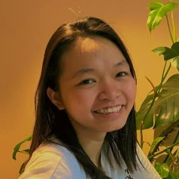

Institutions tend to treat citizens unequally. I audit whether language models inherit that bias in a similar manner.

About
From December 2026 I am a PhD researcher at Leibniz University Hannover in the ERC-funded project BiASE-AI, led by Prof. Dr. Steffen Eckhard. My dissertation audits bias in AI-mediated public service encounters, extending persona-conditioned auditing from single answers to multi-turn dialogue and across German and English, and asks whether bias produced by AI differs structurally from bias produced by human institutions.
I hold an M.Sc. in Politics and Technology (Data & Society) from the Technical University of Munich and a B.A. in International Relations from Karlshochschule International University, including an exchange semester at HSE University in Moscow. My work combines experimental design, statistical testing and text analysis, and sits between computational social science, public administration and AI governance.
Feel free to reach out by email.
Research
In my master's thesis, supervised by Prof. Orestis Papakyriakopoulos, I audited geopolitical bias in LLM-based fact-checking. The study compares nine US, Chinese and European models across five contested topics, using persona-conditioned prompting and close to 72,000 model responses.
I presented this work as a poster at AI: Hype, Hope and Humanity at Erasmus University Rotterdam in September 2026, where it received the Outstanding Poster Award.
Conferences
- Auditing geopolitical bias in LLM-based fact-checking (poster) AI: Hype, Hope and Humanity, Erasmus University Rotterdam, September 2026. Outstanding Poster Award.
Experience
-
Student Research Assistant Chair of Science and Technology Policy, TUM Qualitative coding of interview data
-
Student Research Assistant Emmy Noether Research Group on the Media Portrayal of Majority and Minority Groups, TUM Intercoder reliability and literature review
-
Student Research Assistant, PERGAP Max Planck Institute for Social Law and Social Policy LLM-based extraction from legal texts on social security policy
-
Student Research Assistant, ClimateVisions TUM Text classification and content analysis of climate communication
-
Student Assistant Institute for Ethics in AI, TUM Events and the AI & Human Rights Index
-
Research Coursework, MoralPLai TUM Institute for Ethics in AI Review of quantitative studies on LLM ethics and moral psychology